dsh-einvoice
文件级中国电子发票（OFD/XML）入库、解析、去重与本地归档。
15 个公开合成 alpha 插件 + 2 个一键 suite，全部裸 npm 名（dsh-*）。
Status: alpha / public-synthetic / partial / not counted / not GA. 没有客户证据、客户数据或生产可用声明。SKU-11/14 永久 DROP。
dsh plugin --profile <profile> add dsh-ghg文件级中国电子发票（OFD/XML）入库、解析、去重与本地归档。
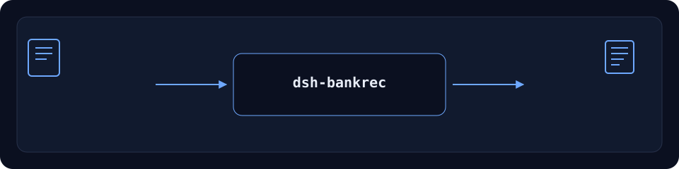
银行流水/GL/CAMT.053/MT940 入库、对账与三表底稿。
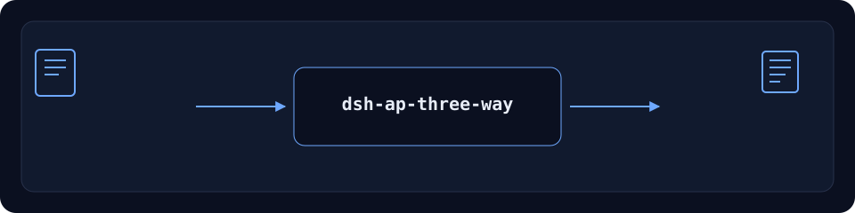
发票/PO/GRN 三单匹配、容差与例外底稿。
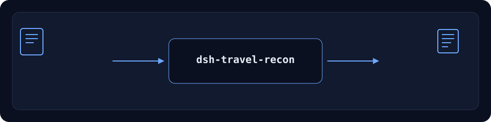
差旅订单/发票/卡流水对账、去重与只读政策检查。
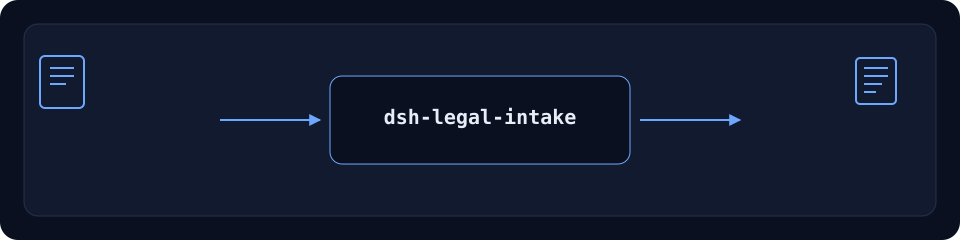
法务需求 EML 收件、线程去重与台账导出。
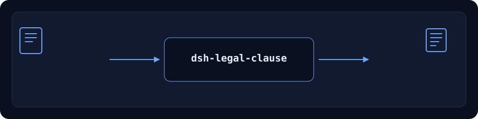
合同条款树、playbook 映射与未解决报告。
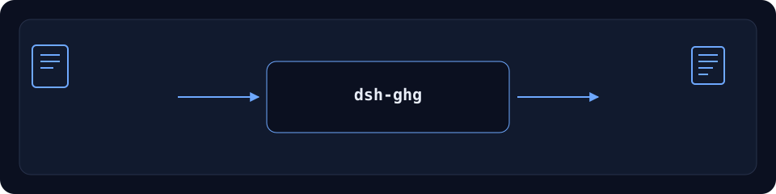
用电活动入库、GHG 计算、逐行复算、底稿与部分 ESRS 包。

QMS NCR 入库、批次别名、影响评估、CAPA 与 8D。
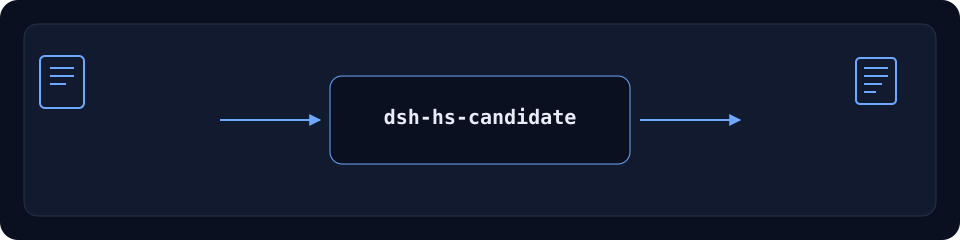
HS Top3 候选、12 要素完整性、RVC 与税则版本门。
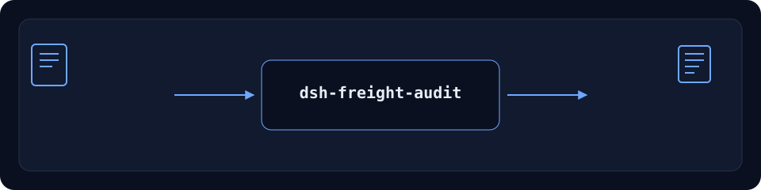
运费 ratecard 版本、账单审计、recovery 汇总与差异导出。
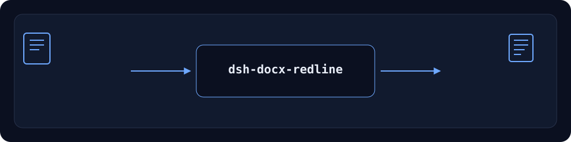
DOCX 结构检查、逐字节 roundtrip 与单 run 文本替换。
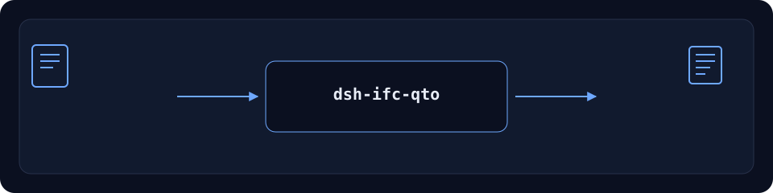
IFC 构件/工程量清单与 CSV 导出。
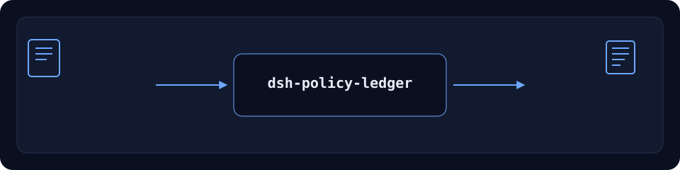
只读安装诊断：能力快照、tarball 断言与安装日志分类。
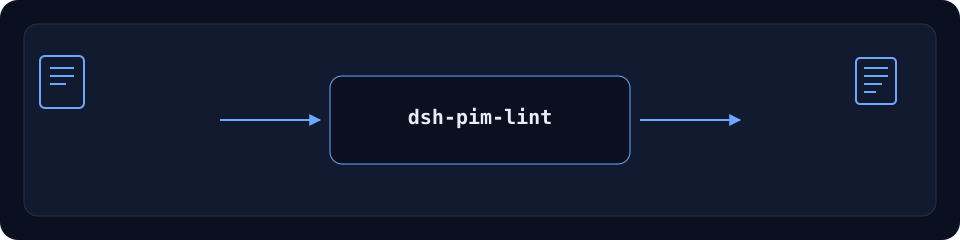
PIM 目录 lint：必填、重复 SKU、GTIN 校验位与价格。
公开/合成 eval-pack lint 与确定性 JSON 评分。
One-command install for dsh-einvoice, dsh-bankrec, dsh-ap-three-way and dsh-travel-recon.
One-command install for dsh-legal-intake and dsh-legal-clause.
电子发票、银行流水、三单匹配、差旅对账：四个裸名插件如何串成一条本地可复核链。
所有包使用裸名。原 dsh-eval-harness 裸名由其他发布者占用，项目改名为 dsh-eval-pack；旧 scoped 包已弃用并指向新包。7 个公开 demo 已恢复活跃维护，随 alpha 版本持续更新。
分类视图（125 行） · Checker 家族 · 主线插件家族 · GitHub 主页
全部 17 个项目均为 Apache-2.0；public/synthetic、alpha、not GA。
| 平台 | 地址 |
|---|---|
| GitHub | PerryLink/dsh-plugins |
| npm | ~perrylink |
| Gitee | perrylink/dsh-plugins |
| GitCode | PerryLink/dsh-plugins |